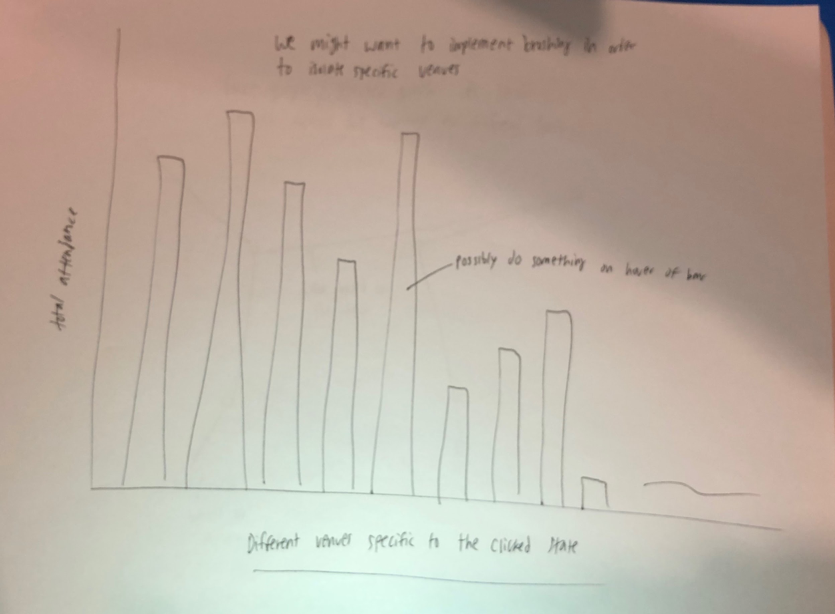

-
Basic Info
- Music Industry Analytics
- Nikash Taskar and Ian Katzman
- nikashtaskar@wustl.edu and ikatzman@wustl.edu
- https://github.com/niktaskar/tour_analytics
-
Background and Motivation
-
We are both music fans, and this is a topic that is very interesting to both of us. We’ve often wondered why our favorite artists never come to St. Louis, and we hope to gain some insight as to why, whether St. Louis doesn’t have the right demographic, doesn’t have the right venues, or just isn’t a common place to tour. Looking into some analytics that people in the music industry look into will also hopefully be eye-opening. Over the course of the project, we hope to gain insight as to how artists and management groups determine where and when to perform in order to gain the most attention.
-
Project Objectives
-
Our primary objective with this project is to determine the best stops for a number of artists to have shows at on tour based on data. Using a variety of data we will hopefully be able to find trends that link some areas with more success than others when it comes to an artist’s specific genre or name. We would also like to determine where the artist’s most successful venues or performances were.
-
This would hopefully allow for artists to make more informed decisions when they are planning their tour in order to make the most money they can, reach the most fans, and more importantly feel fulfilled during their performances.
-
Data
-
We will try to get our data from websites that have information about ticket sales and tours. We will do some web scraping and data parsing.
-
https://www.setlist.fm/
-
https://www.pollstar.com/
-
https://www.songkick.com
- Some tours were so popular that they have their own Wikipedia pages with some information that can be useful
As we work on the project we will hopefully find more sources
-
Possible Data
- Ticket prices at certain locations
- Average ticket price for artist
- Average attendance for artist
- Attendance at certain venues
- Dates of concerts
- Number of shows at location
- Number of shows per year
-
Data Processing
- We will most likely need to clean up our data since a lot of it will be coming from sources where the data isn't immediately available in easily manipulated formats
- We hope to get data for a few artists, right now we are thinking anywhere between 5 and 10
- Data processing will be done mostly in Python, to scrape, analyze and transform the data into easily digestible data. The rest will be done in JavaScript to filter, sort, and map the data to svg elements to create the final visualizations
-
Visualization Design
- Full Map:
-
Bar Chart:

-
Tooltip:
-
Force or Directed Graph:
-
Must Have Features
- Map of US that will be used to display information
- Tooltip on hover over individual states showing information about the state
- Color coding different elements of the visualization in order to convey specific information
- Bar chart onclick for each state will show specific information about the state and venues in that state, and will, more importantly, update other visualizations
-
Optional Features
- Brushing to isolate specific venues and/or states in order to display information specific to those elements
- Force maps to create links between venues and artists, stats and artists, etc.
-
Project Schedule
- March 17-23: Project Proposal, Target, and Start Data Wrangling
- March 24-30: Finish Data Wrangling and Design
- March 31-April 6: Start Implementation
- April 7-13: Keep working on Implementation
- April 14-20: Finish Implementation
- April 21-27: Evaluate and fix bugs